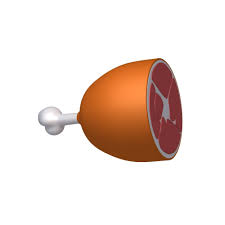
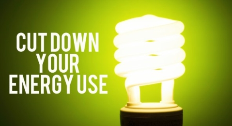
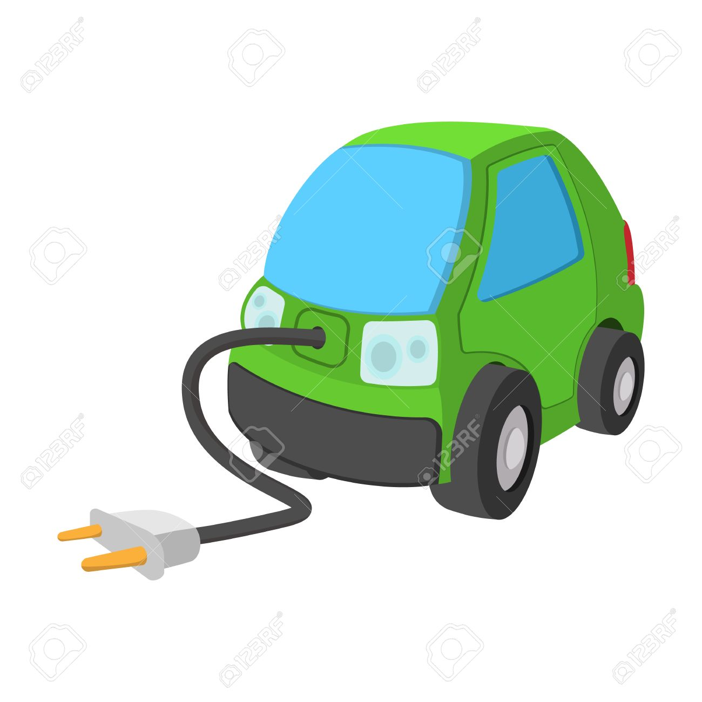

Being more environmentally friendly
5 Ways!
Eat less meat
Believe it or not, cutting back on your consumption of meat can make a huge difference in the environment. More than 30 percent of the Earth’s surface is being used to raise and support livestock. According to a United Nations study, “the livestock sector accounts for 9 percent of CO2 deriving from human-related activities, but produces a much larger share of even more harmful greenhouse gases. It generates 65 percent of human-related nitrous oxide, which has 296 times the Global Warming Potential (GWP) of CO2.” Cutting back on your meat consumption is an important step in reducing the overall emission of GWP gases. Less livestock also means more land we can enjoy and use for recreation. Consider replacing some of your meat-heavy meals with vegetables or eating more seafood!
Use Paper Less And Recycle More
The world we live in today is much more reliant on computers and digital technology. It is easy to go a day without using a notebook or even a piece of paper. The less paper you use, the less paper needs to be produced and the more trees that get to fill our forests. By recycling one short ton (0.91 t) of paper you can save 17 mature trees, according to the EPA. If it is essential for you to use paper at your job or at school, you can still make a difference by recycling the paper you do use. Today, more than 40 percent of municipal solid waste is paper and paper products. It takes less energy to create paper through recycled and used sheets than by creating ‘virgin’ paper. Recycling is easy and one of the best ways to live green.
Cut Down On Energy In Your Home
There are a lot of ways to cut back on energy you use in your home. These will lead to smaller energy bills and more money in your pocket! That is a win for you and a win for the Earth. Start by lowering your thermostat in the winter and raising it in the summer. Unplug appliances when they aren’t being used, wash all possible clothes on cold (according to The Worldwatch Institute, 85 percent of the energy used to machine-wash clothes goes to heating the water) and use a drying rack or clothesline to dry your outfits when they are finished being washed.
Borrow Instead Of Buying
It is easy to waste money on things that you can easily borrow. Rent movies, borrow books from libraries and buy secondhand goods when at all possible. By purchasing and using pre-owned items, you reduce those items that need to be kept in a landfill and save yourself money. Living green doesn’t mean you have to settle for less, many items that you find in a used-goods store are just as good as the original.
Buy an electric car
By choosing to drive an EV you are helping to reduce harmful air pollution from exhaust emissions. An EV has zero exhaust emissions. If you use renewable energy to recharge your EV, you can reduce your greenhouse gas emissions even further. You could recharge your EV from your solar PV system during the day instead of from the grid.